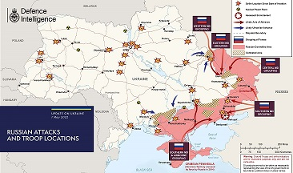
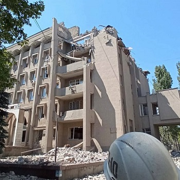
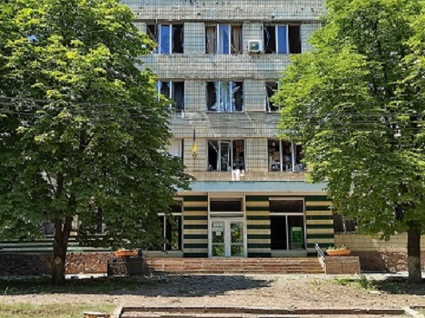
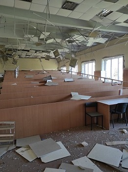
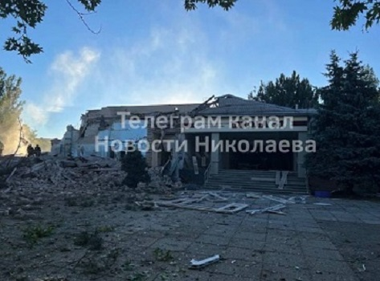
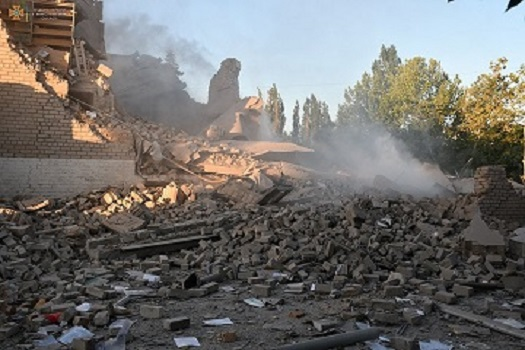
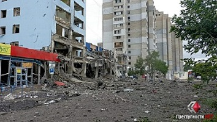
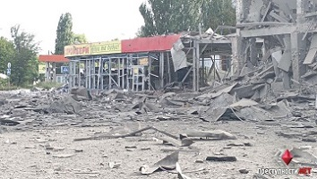
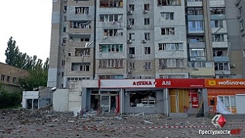

Чи можна спати понад 200 днів? Скажете, що це неможливо, то скажіть це українцям. Всі українці «заснули» 24 лютого 2022 року. Бо, повірити, що це правда було неможливо. Здавалося, що це жахливий сон. У кожного з нас було одне єдине бажання - прокинутися, але не вдавалося. Не вдавалося, бо це був не сон! В Україні – війна!
«Прокинутися» всіх нас змусила реальність через декілька днів, коли наша армія потребувала допомоги від кожного з нас. Хто, чим міг, тим і допомагав. Хтось допомагав фінансово, дехто віддавав своє майно на користь ЗСУ, а інші – молитвою. Кожна допомога була важливою. Ми об’єдналися, як ніколи. Війна змусила зробити те, що не вдалося за всі роки незалежності нашої країни.
У кожного з нас свій «сон», своя історія і біль. Мій біль – місто Миколаїв. Моє рідне місто, яке обстрілюють з першого дня. Моє місто, яке намагаються зруйнувати. Мої спогади, які намагаються стерти. Кожен зруйнований чи напівзруйнований об’єкт є знаковим для кожного миколаївця, бо є частинкою нашого життя. Нестерпно боляче дивитися на ці руїни.
5,5 років моє життя було тісно пов’язане з Миколаївським національним університетом імені В.О. Сухомлинського. Це місце, де почала здійснюватися моя мрія. Мрія бути вчителем.
  Частинка мого життя довжиною понад 7 років - Миколаївський ліцей №51. Саме тут здійснилась моя мрія. Моє перше місце роботи.
 Моє повсякденне життя неодноразово приводило мене в супермаркет «АТБ», будівельний магазин, аптеки, медичний центр, які розташовані поруч з моїм будинком.
  Біль…Злість…Лють…Безсилля…Віра… Ці відчуття добре знайомі кожному, проте, ми не здаємось, бо Україна понад усе!
In English
Is it possible to sleep for more than 200 days? If you say that it is impossible, then tell that to the Ukrainians. All Ukrainians "fell asleep" on February 24, 2022. Because it was impossible to believe that it was true. It seemed like a terrible dream. Each of us had one single desire - to wake up, but it was not possible. It didn't work, because it wasn't a dream! There is a war in Ukraine!
The reality forced us all to "wake up" after a few days, when our army needed help from each of us. Whoever helped, whatever he could. Some helped financially, some gave their property for the benefit of the Armed Forces, and others - through prayer. Every help was important. We are united like never before. The war forced to do what was not possible during all the years of our country's independence.
Each of us has our own "dream", our own story and pain. My pain is the city of Mykolaiv. My hometown, which has been shelled since day one. My city, which they are trying to destroy. My memories that are trying to erase. Each destroyed or half-destroyed object is symbolic for every resident of Mykolaiv, because it is a part of our life. It is unbearably painful to look at these ruins.
For 5.5 years my life was closely connected with Mykolaiv National University named after V.O. Sukhomlynskyi. This is the place where my dream began to come true. The dream of being a teacher.
A piece of my life over 7 years long- Mykolaiv Lyceum No. 51. This is where my dream came true. My first place of work.
My everyday life has repeatedly brought me to the "ATB" supermarket, hardware store, pharmacies, medical center, which are located near my house.
Pain... Anger... Rage... Powerlessness... Faith... These feelings are well known to everyone, however, we do not give up, because Ukraine is more than all!